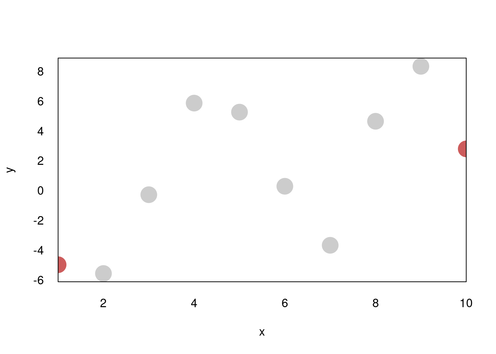
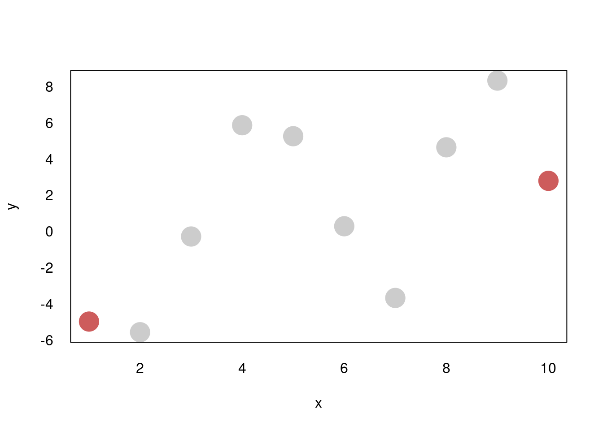

7 System description
This section contains a description of the two packages developed as part of this doctoral project (plotscape and plotscaper). Since plotscaper provides high-level application programming interface (API) for R users, whereas plotscape is more concerned with more low-level JavaScript functionality, I will organize the sections accordingly, by discussing high-level API concerns alongside plotscaper and implementation details alongside plotscape. Cross-cutting concerns will be addressed towards the ends of the respective sections.
At the time of writing, the plotscape repository contains about ~6,400 lines of code (mainly TypeScript), whereas the plotscaper repository contains about ~500 lines of R code (counted using the cloc CLI tool).
7.1 Core requirements
The high-level system/API needs to:
- Be accessible to a wide range of users
- Provide functionality for programmatically creating interactive figures and manipulating them live
- Integrate well with popular tools within the R ecosystem, such as the RStudio IDE and RMarkdown
The low-level system needs to be able to:
- Partition the raw data into a hierarchy of parts
- Compute summary statistics on these parts
- Transform these summaries while respecting the hierarchy (e.g. stacking, normalizing by parent values)
- Map these summaries to visual encodings such as x- and y-position, width, height, or area
- Render geometric objects, axes, etc…
- Respond to user input and propagate changes reactively
7.2 Application Programming Interface (plotscaper)
As was discussed in Section 5, a primary inspiration for plotscaper’s API was the popular R package ggplot2. In ggplot2, plots are created by chaining together a series of function calls, each of serves to compose an (immutable) plot schema:
library(ggplot2)
# In ggplot, plots are created by chaining a series of function calls
ggplot(mtcars, aes(wt, mpg)) +
geom_point() +
scale_x_continuous(limits = c(0, 10))# The ggplot2 call creates an immutable object defining the plot schema
plot1 <- ggplot(mtcars, aes(wt, mpg))
names(plot1)## [1] "data" "layers" "scales" "guides" "mapping" "theme" "coordinates" "facet" "plot_env" "layout"
## [11] "labels"## [1] 0# Adding components such as geoms returns a new schema object
plot2 <- ggplot(mtcars, aes(wt, mpg)) + geom_point()
names(plot2)## [1] "data" "layers" "scales" "guides" "mapping" "theme" "coordinates" "facet" "plot_env" "layout"
## [11] "labels"## [1] 1While a popular choice for static graphics, the ggplot2 API has some disadvantages when it come to interactive graphics. Specifically:
- The package is generally designed around the idea of creating individual plots. Although multi-panel figures consisting of repeats of the same plot type can be created via facetting (
facet_wrap()andfacet_grid(), Wickham 2016), to create multi-panel figures with a mix of different plot types, the users have to reach for external packages such asgridExtra(Auguie 2017) orpatchwork(Pedersen 2024). As was discussed in Section 3, in interactive graphics, customizing individual plots is less important however, the ability to compose and view multiple plots is key. - The model of composing an immutable plot schema works well for static graphics, however, with interactive graphics, mutability can be highly beneficial as well. Specifically, the ability to directly modify a rendered figure through code is particularly useful. For instance, in live figure, setting the width of a histogram bin to a specific value can be effectively achieved via a simple function call, rather than by having to manipulate a widget or some other control mechanism.
- The package was developed before widespread adoption of the pipe operator in R (both
%*%frommagrittr, Bache and Wickham 2022; and the native|>pipe, R Core Team 2024) and so it used the overloaded+operator to implement essentially the same functionality. Hadley Wickham himself admitted that if he had discovered the pipe operator earlier, he would have never implementedggplot2with+(Wickham, Hadley 2014). - Many of the package’s core functions make use of non-standard evaluation (e.g.
aes()andfacet_wrap(), Wickham 2019). While non-standard evaluation seems to be quite popular within the R community and does make some interactive code more concise, it also makes it more harder to use these functions programmatically (Wickham 2019). For example, using the defaultaes()function, we cannot plot all pairwise combinations of variables in a data set by simply looping over their names - to do this, we need to use a specializedaes_string()function that takes variable names as strings. Again, in interactive graphics, it is often highly desirable to be able to manipulate the figure with code, and as such, non-standard evaluation may be less useful in this context.
Given the reasons above, I’ve adopted a similar approach to ggplot2, giving the user the ability to create interactive figures by chaining together a series of function calls. However, unlike in ggplot2, the primary focus is on building figures out of multiple plots, rather than customizing individual plots. As such, the function calls typically serve to add (or remove) entire plots, although individual plots can still be modified via specialized functions which rely on selectors. Furthermore, the API supports both the creation of immutable plot schemas as well as mutable manipulation of a live figure, using largely the same set of functions. The idea is that the user can choose their preferred workflow based on their circumstances.
7.2.1 Basic example
Here’s a basic example of creating an interactive figure with plotscaper:
##
## Attaching package: 'plotscaper'## The following object is masked _by_ '.GlobalEnv':
##
## normalize## Server started on port 3000 (handles communication between R session and figure).We first initialize a plot schema with the create_schema() function that we pass data to (more on that later, in Section 7.2.2). Next, we chain together a series of function calls of the form add_*(), adding individual plots. Variable names are provided via character string vectors. Importantly, these string vectors do not represent direct aesthetic mapping in the same way how the aes() function in ggplot2 does: in the plotscaper model, data variables are not directly mapped to aesthetics, but can undergo transformations and interactive remapping. Finally, the figure is rendered with the render() call.
7.2.2 The scene and the schema
An key part of the plotscaper API is the distinction between the figure schema and the live scene. In short, the schema is an immutable blueprint defining the figure, while scene scene is its live, rendered version. Both can be manipulated using largely the same set of functions. However, whereas manipulatingthe schema simply appends the corresponding function calls to an immutable ledger, manipulating the scene applies the changes directly, in a mutable way. Consequently, the scene can only be manipulated inside an interactive R session (such as, for example, inside the RStudio IDE, Posit 2024), whereas a figure schema can also be rendered statically, as part of an RMarkdown document, for example.
Here is an example of the figure schema, using the same code as above:
## plotscaper schema:
## add-plot { type: scatter, variables: c("wt", "mpg") }
## add-plot { type: bar, variables: cyl }## List of 2
## $ :List of 2
## ..$ type: chr "add-plot"
## ..$ data:List of 3
## .. ..$ type : 'scalar' chr "scatter"
## .. ..$ variables: chr [1:2] "wt" "mpg"
## .. ..$ id : 'scalar' chr "1efc4922-d242-4b22-acf5-9514b913c7eb"
## $ :List of 2
## ..$ type: chr "add-plot"
## ..$ data:List of 3
## .. ..$ type : 'scalar' chr "bar"
## .. ..$ variables: chr "cyl"
## .. ..$ id : 'scalar' chr "fb3c9e35-b2c0-4883-b6f8-7eaa18087b3f"As you can see, the schema is essentially just a list of messages (which are in fact stored as an R list() that gets converted to JSON when the figure gets rendered). The render() call parses these messages sequentially, applying the changes that create the figure. The main advantage of the schema is that it provides an immutable record, allowing the figure to be recreated in its exact state. Furthermore, the schema can be manipulated programmatically, by e.g. pruning or modifying some of the messages, and, since it is essentially just JSON, it can be easily transported.
Importantly, the schema does not actually encode the the figure’s state directly; instead, it records the sequence of steps that generate that state. This deliberate design choice avoids duplicating the figure’s state between the R client (e.g., the RStudio session) and the JavaScript “server” (the live figure). By representing the schema as a simple immutable list of messages, all figure state resides within JavaScript, eliminating the need for reconciliation or synchronization with the R side.
The scene is implicitly created via the call to render(). Under the hood, the call constructs a htmlwidgets widget (Vaidyanathan et al. 2021) which utilizes custom plotscape code to set up and manage the figure. When inside a live interactive R session, the render call also automatically launches an httpuv server (Cheng et al. 2024) for live communication with the figure. To enable this live communication, the user must first assign the scene object to a variable. Then they can call functions to modify the figure the same way as they would with a schema, however, in this case, the figure is updated live, in a mutable fashion.
# NOT EVALUATED - works only inside interactive R sessions,
# not RMarkdown/bookdown documents
scene <- create_schema(mtcars) |>
add_scatterplot(c("wt", "mpg")) |>
add_barplot(c("cyl")) |>
render()
# Adds a histogram, mutating the current figure
scene |> add_histogram(c("disp"))
# Selects cases by rows
scene |> select_cases(1:10)
# Query selected cases (works in interactive mode only)
scene |> selected_cases() # 1 2 3 4 5 6 7 8 9 10As noted earlier, most functions work on both the schema and the scene. The one exception are state-querying functions, which include selected_cases(), assigned_cases(), and get_scale(). These functions retrieve the figure’s state and return it as output in R (without modifying the figure in any way). For example, selected_cases() returns the indices of the currently selected cases as a numeric vector. These functions are designed to interactively query the figure’s state, and as such it does not make sense to use them with the stateless schema.
7.2.3 HTML document embedding
Since plotscaper figures are just htmlwidgets widgets, they can be statically embedded in HTML documents such as those produced by RMarkdown (rmarkdown2024?) or Quarto (Allaire and Dervieux 2024). More specifically, when a plotscaper figure is rendered, htmlwidgets (Vaidyanathan et al. 2021) is used to construct a widget skeleton (consisting of HTML, CSS, and JavaScript) and injects the JavaScript corresponding to plotscape. The resulting widget can then be statically embedded in any kind of HTML document. This is how the plotscaper figures are rendered in the present thesis. As mentioned above, this means that the figure cannot be interacted live through code, however, within-figure interactive features such as linked selection and querying still work regardless (since these happen entirely on the JavaScript side).
7.3 Interactive figure platform (plotscape)
This section describes the actual platform used to produce and manipulate interactive figures, as implemented in plotscape. It contains a detailed listing of the system’s components, along with descriptions of what each component does.
7.3.1 Indexable
As discussed in Section ??, when it comes to representing data, the column-based model offer several advantages over the row-based model. In this model, data is stored in a dictionary of contiguous arrays (as in, for example, a CSV file). Thus, I chose to represent the fundamental unit of data as a column, a fixed-length array of values.
However, at times, it may be useful to have additional flexibility. Specifically, it may be useful to to extend our definition of a “column” to non-array-like things, such as derived values and values repeated across all rows. This is where Indexable<T> comes in.
An Indexable<T> represents a single “column” of data, and is just a union of three basic types:
In plain words, an Indexable<T> is one of three things:
- A variable of type
T - An array of
Ts - A callback that takes an index and returns a
T.
To extract a value from Indexable<T>, we rely on a generalized form of indexed access. The way how this indexed access works depends on the type of the indexable. First, if the indexable is an array, we subset it using the usual square bracket notation. Second, if the indexable is a non-array-like variable (but not a function), we always return it, regardless of the index (we can think of it as the value as being repeated across all rows). Third and finally, if the indexable is a callback, then we call it with the index and take the returned value. A uniform interface for this generalization of indexed access is provided by Getters.
Altogether, this is similar to Leland Wilkinson’s idea of a variable function (2012).
The main advantage of Indexable<T> is that, while the raw data will typically come in the form of arrays, there are many places further down the data visualization pipeline where constants and callbacks are useful. For example, in a typical barplot, the base of the y-axis is set to a constant value, typically zero. While we could hypothetically append an array filled with zeros to the rendering data, it is more convenient and memory efficient to instead use a constant (0), or a thunk (() => 0). As another example, often, if we have an array of several repeated values, it may be convenient to instead represent it as two arrays: a (short) underlying array of unique values or labels and an array of indices (similar to base R’s factor class). When we need the actual values, we can use a callback to subset the array of labels.
7.3.2 Getter
A Getter<T> is simply a function which takes an index and returns a value of type T. To construct a Getter<T>, we take an Indexable<T> and dispatch on its underlying type. For illustration, here is a (slightly) simplified implementation:
// Getter.ts
export type Getter<T> = (index: number) => T;
export namespace Getter {
// Constructor
export function of<T>(x: Indexable<T>): Getter<T> {
if (typeof x === `function`) return x;
else if (Array.isArray(x)) return (index: number) => x[index];
else return () => x
}
}we can then create and use Getters like so:
import { Getter } from "./Getter"
const getter1 = Getter.of([1, 2, 3])
const getter2 = Getter.of(99);
const getter3 = Getter.of((index: number) => index - 1);
console.log(getter1(0));
console.log(getter2(0));
console.log(getter3(0));## 1
## 99
## -1Note that, by definition, every Getter<T> is also automatically an Indexable<T> (since it is a callback (index: number) => T). This means that we can create new getters out of other getters.
The Getter namespace also includes several other utility functions. One example is Getter.constant which takes in a value T and returns a thunk which always returns T (i.e. () => T). This is useful, for example, when T is an array and we always want to return the whole array (not just a single element):
import { Getter } from "./Getter"
const getter4 = Getter.constant([`A`, `B`, `C`])
console.log(getter4(0))
console.log(getter4(1))## [ "A", "B", "C" ]
## [ "A", "B", "C" ]Another utility function is Getter.proxy, which takes a Getter and an array of indices, and returns a new Getter which proxies the access to the original values through the array of indices:
import { Getter } from "./Getter"
const proxyGetter = Getter.proxy([`A`, `B`, `C`], [2, 1, 1, 0, 0, 0]);
console.log([0, 1, 2, 3, 4, 5].map(proxyGetter))## [ "C", "B", "B", "A", "A", "A" ]This function becomes particularly useful when implementing Factors.
7.3.3 Dataframe
Another fundamental data structure is a Dataframe. A Dataframe is just a record of Indexable values:
In this way, a Dataframe is essentially just a SoA with a bit of extra flexibility. Specifically, while in typical SoA data structures, all properties are usually arrays, in Dataframe they are instances of the Indexable type, so they may also be constants or functions. For example, the following is a valid instance of a Dataframe:
const data: Dataframe = {
name: [`foo`, `bar`, `baz`],
age: 99,
canDrive: (index: number) => index < 1
}The fact that the “columns” of a Dataframe can be constants and functions is useful, for example, when want every row to contain the same value (e.g. 0 for the base of a barplot), or when we want the value be lazily computed based on other values. This is also where the SoA representation offers a unique advantage: to achieve the same behavior in AoS layout, we would have to have a copy of the value or function pointer in every row.
Dataframe should always contain at least one array and all arrays in a Dataframe should have the same length. This is because some operations are impossible if we do not know the length of the Dataframe (the number of rows). For example, when rendering a scatterplot, how do we decide how many points to draw if the x- and y-positions have length 19 and 20, or if they are both constants? Thus, at least of one the dataframe’s columns needs to have a fixed length (i.e. have an underlying array) and there should not be multiple different lengths.
In the current version of the system, these fixed-length constraints are not enforced via a static check (such as during a constructor call), but are instead checked dynamically during runtime, whenever the integrity of a dataframe’s length becomes a key concern (using utility functions such as Dataframe.checkLength). This is the case, for example, when initializing a Scene or when rendering.
I found the dynamic fixed-length checks to be the better option, for several reasons. First, they allow us to represent data as a plain JavaScript object (POJO) rather than having to instantiate a class. Second, due to JavaScript’s dynamic nature, this approach is also safer: if, during runtime, the user adds a property to a Dataframe which violates the fixed-length constraints, this approach will catch the error. Third, and finally, for any data sets with typical dimensionality (more rows than columns, \(p << n\)), the tiny performance hit that may be incurred due to having to loop through the columns to find the length dynamically will be minuscule compared with the computational cost of looping through the data set’s rows and doing work such as rendering or computing statistics. For high-dimensional datasets (\(p >> n\)), we could always extend the system to memoize the length/number of rows on the Dataframe object (although then we may lose the security of the dynamic runtime checks).
7.3.4 Reactive
By definition, an interactive data visualization system needs to be able to respond to user input and propagate this information wherever it needs to go. Reactive is a fundamental mixin that provides this utility. It is essentially just custom implementation of the Observer/EventEmitter pattern.
Any object can be made Reactive by passing it into the Reactive constructor, and then calling it with functions from the Reactive namespace. Here is a simplified implementation:
// Reactive.ts
const LISTENERS = Symbol(`listeners`); // A symbol key to emulate private property
type Callback = (data: Record<string, unknown>) => void;
export interface Reactive {
[LISTENERS]: Record<string, Callback[]>;
}
export namespace Reactive {
export function of<T extends Object>(object: T): T & Reactive {
return { ...object, [LISTENERS]: {} };
}
export function listen(object: Reactive, event: string, cb: Callback) {
if (!object[LISTENERS][event]) object[LISTENERS][event] = [];
object[LISTENERS][event].push(cb);
}
export function dispatch(
object: Reactive,
event: string,
data: Record<string, unknown> = {}
) {
if (!object[LISTENERS][event]) return;
for (const cb of object[LISTENERS][event]) cb(data);
}
}We can use Reactive like so:
import { Reactive } from "./Reactive"
const dog = Reactive.of({ name: `Terry the Terrier` })
Reactive.listen(dog, `car goes by`, () => console.log(`Woof`))
Reactive.dispatch(dog, `car goes by`)## WoofThe actual Reactive implementation includes more features, such as the ability to propagate events, throttle them and set their priority (determining the order in which event callbacks execute), remove listeners, and fire only once multiple events have been dispatched. However, the underlying model is the same.
7.3.5 Factors
When visualizing data, we often need to split our data into several parts. As was discussed in Introduction [ADD REFERENCE], these parts together forms a partition of the data, and there may be multiple partitions organized in a hierarchy, such that one or more parts in a child partition “add up” to a part in the parent partition.
A Factor provides a way to represent such data partitions and the associated metadata. In this way, it is similar to base R’s factor S3 class, although there are some important differences which will be discussed below.
Factor has the following interface:
interface Factor<T extends Dataframe> extends Reactive {
cardinality: number;
indices: number[];
data: T
parent?: Factor;
}cardinality records the number of unique parts (indices) that form the partition represented by the Factor. For example, if the factor represents boolean partitioning of the data into two parts, the cardinality will be 2, if it represents partitioning into three parts, the cardinality will be 3, if it represents a partitionining into all countries in the world, the cardinality will be 195, and so on.
indices represent the actual assignment of cases (rows of the data) to the parts. For example, the array of indices [1, 0, 1, 1, 2] represents the following partitioning: the second case (row) is assigned to the first part, the first, third, and fourth case are assigned to the second part, and the fifth case to the third part (keeping in mind JavaScript’s zero-based indexing). As was mentioned above, the number of unique values in indices has to match the factor’s cardinality, and the length of indices has to match the number of rows of the data set that the factor partitions.
Technically, cardinality represents the same information as is contained in indices (the number of unique values). However, for some operations, it is useful to be able to access cardinality directly, in \(O(1)\) time, instead of having to loop through the entire array of indices (\(O(n)\) time). Such is the case, for example, when constructing product factors or when initializing arrays of summaries.
A factor may have associated metadata stored in the data property. The data property is a Dataframe with one row for each part (i.e. the number of rows is equal to cardinality). Representing metadata as a dataframe represents a departure from base R’s factor class, which represents all metadata as a flat vector of levels. For instance:
## [1] (0,5] (0,5] (0,5] (0,5] (0,5] (5,10] (5,10] (5,10] (5,10] (5,10]
## Levels: (0,5] (5,10]With Factor, the same information would be represented as:
const factor: Factor = {
cardinality: 2,
indices: [0, 0, 0, 0, 0, 1, 1, 1, 1, 1],
data: {
binMin: [0, 5],
binMax: [5, 10],
},
};There are several advantages to storing Factor metadata in a Dataframe as opposed to a flat vector/array. First, when partitioning data, we often want to associate several pieces of metadata with each part. For example, if we cut or bin some numeric variable, like in the example above, we want to store both the lower and upper bound of each part’s bin. We could store both pieces of information as a single element (tuple) in an array/vector, the way that cut does it, however, this works well with only few pieces of metadata: once we start storing longer tuples, it becomes hard to tell what each tuple element represents. We could alleviate the problem by naming the tuple elements, but then we are essentially storing the metadata in an array of dictionaries, i.e. the AoS data structure. We can do better by storing the metadata in a table.
Second, if we store metadata in a Dataframe, it is easier to combine it when we take a product of two or more factors. Since taking the product of multiple factors is a fundamental operation in an interactive data visualization system, underpinning operations such as linked brushing, it makes sense to use this representation.
There are multiple types of factors which differ semantic meaning as well as the associated metadata. However, all are represented by the same underlying Factor data type. To construct these Factor subtypes, we use different constructor functions which are all exported by the Factor namespace. These will be discussed in the following subsections.
7.3.5.1 Bijection factors
Factor.bijection is the first of two trivial factor constructors. It assigns each case its individual part, such that the cardinality of the resulting factor is simply equal to the number of cases in the data. The function signature of Factor.bijection is as follows:
Notice that, when we create a bijection factor, we need to specify the length of the data n (the number of cases). This is used to create indices. Technically speaking, explicitly specifying n is not necessary: we could implement indices as a callback which takes an index and simply returns it back (an identity function). However, since the factors are primarily used to summarize data, and we need to know how many cases to summarize, we do need to store the length of the data somewhere. I found it easier to simply create a dummy array of indices, rather than defining a separate length property on Factor. There is little computational cost associated with this, since, by definition, the partitioning represented by a bijection factor does not change6.
Factor.bijection can also have associated metadata. This is just a Dataframe of length n.
On an abstract level, a bijection factor represents a terminal object in the Factor category (a category of partitions with intersections as morphism). If we take the product of a bijection factor and any other factor, the result will always be another bijection.
Typical use case of Factor.bijection is the scatterplot. When constructing a scatterplot, we simply take two arrays of equal length (three, if representing size as well) and draw one point per each element of the arrays. Thus, the partitioning Factor has the same cardinality as the length of the arrays and the arrays represent the factor’s metadata. Another use case is the parallel coordinates plot.
7.3.5.2 Constant factors
Constant factors, created with the Factor.mono constructor, are the second trivial factor subtype. They represent the dual of bijection factors, by assigning all cases of the data to a single part. Thus, the labeling function is a constant function (hence the name). The constructor signature is the same as for bijection factors:
The metadata associated with constant factors is, intuitively, a Dataframe of length 1, i.e. a dictionary of arrays with one element.
On an abstract level, Factor.mono represents an initial object in the Factor category. That is, if we take the product of a constant factor and any other factor, the result will simply be the other factor (with the constant factor’s metadata repeated in all of the other factor’s partitions’ metadata).
The use cases for constant factors are a bit more obscure. One example is the spinogram. In a spinogram, the upper x-axis limit represents the cumulative sum (count) of all cases in the data. A convenient way to model this is by a constant factor. Another potential use case for constant factors might be plots with a single geometric object, such as a radar plot7.
7.3.5.3 String factors
When we have array of values which can be coerced to strings (using the .toString() method), we can easily turn this into a factor by treating two values as the same level if their string representations match. This is the basis of string factors constructed by Factor.from:
type Stringable = { toString(): string };
function from(array: Stringable[]): Factor<{ labels: string[] }> The metadata associated with Factor.from is the array of labels, which are simply all of the unique values produced by applying the toString() method to each element in array.
7.3.5.4 Binned factors
When we have an array of numeric values, we can turn this into a factor by assigning the values to (typically equal-sized) bins, as in a histogram. This is what Factor.bin is for. It has the following constructor signature:
function bin(
array: number[],
options: {
breaks?: number[];
nBins?: number;
width?: number;
anchor?: number;
},
): Factor<{ binMin: number[]; binMax: number[] }>;Notice that the constructor comes with a list of options which control how the bins are created. If breaks are provided, the constructor uses those as the bins directly. Otherwise it uses nBins, width, and anchor to determine the breaks, in decreasing order of importance.
The metadata that Factor.bin produces are the limits of each bin (binMin and binMax).
7.3.5.5 Product factors
A fundamental operation that we need to be able to do with factors is to take their Cartesian product. That is, when we have two factors of same length, each with its corresponding array of indices, we need to be able to take the indices, combine them element-wise, and create a new factor that will have as its cardinality the number of unique pairwise combinations of indices.
For example, take two factors represented by the following data (omitting the data property for conciseness):
If we take their product, we should end up with the following factor:
Notice that the cardinality of the resulting factor (\(4\)) is greater than that of either of the two constituent factors (\(2\), \(3\)) but less than than the combined product of their cardinalities (\(2 \cdot 3 = 6\)). This will generally be the case: if the first factor has cardinality \(a\) and the second cardinality \(b\), the product of the two factors will have cardinality \(c\), such that:
- \(c \geq a\) and \(c \geq a\) (equality only if one or both of the factors are constant or there is only one unique element-wise index combination)
- \(c \leq a \cdot b\) (equality only if all element-wise index combinations are unique)
That is, the product factor will have will be at least as many parts (but most likely more) as either of its constituent, and at most as many parts as the product of the numbers of the constituents’ parts (but most likely fewer). This is a simple fact based on the logic of partitions.
7.3.5.5.1 Computing product indices
A subtle challenge is how to actually compute indices of a product factor. One naive idea might be to simply sum the constituent factors’ indices element-wise. However, this approach does not work: the sum of two different pairs of indices may produce the same value. For instance, in a product of two factors with cardinality \(4\), there are three different ways to get indices which sum to \(4\): \(1 + 3\), \(3 + 1\), and \(2 + 2\). Additionally, this approach does not preserve order: intuitively, we would want the cases associated with lower values of the first factor’s indices to come first (have lower index).
The way out of this predicament is to use the following formula (similar to one discussed in Wickham 2013) for computing product indices:
\[i_{\text{product}} = \max(a, b) \cdot i_{\text{factor 1}} + i_{\text{factor 2}}\]
We multiply the first factor’s index by the greater of the two factors’ cardinalities and add the index of the second factor. Intuitively then, the first factor gets assigned a greater “weight” (represented by the cardinality), and taking the maximum of the two cardinalities ensures that unique pairs of indices always produce a unique product index (since, e.g. with factors of cardinalities 2 and 3, an index pair (0, 2) will produce a product index 2 and index pair (1, 0) will produce a product index 3).
This method works well but there are two issues with it that need to be addressed. First, computing the indices does not tell us the resulting cardinality. Second, the computed indices are not dense. For example, multiplying computing the product indices using the factors above gets us the following:
{ cardinality: 2, indices: [0, 0, 1, 0, 1, 1] };
{ cardinality: 3, indices: [0, 1, 2, 0, 1, 2] };
// Product
{ cardinality: ?, indices: [0, 1, 5, 0, 4, 5] }Notice that the cardinality is unknown (?) and there are gaps in the indices (for example, we are missing indices 2 and 3).
The issue of cardinality is unavoidable - we cannot infer the cardinality of the product factor from the cardinalities of the constituent factors alone, because we do not know how many unique combinations of indices there will be. However, what we can do is keep track of how many unique product indices we encounter while computing them (using, for example, an array or a hash set), and then use that number after we have finished looping through the indices.
The issue of the gaps in the indices is a bit more complicated. While looping through the indices, we do not know how many unique index combinations we will encounter. There are several options for dealing with this problem. First, hypothetically, we could implement the downstream parts of our system in such a way that the factor indices would only represent relative position, not absolute. I have actually tried this out but found it rather inconvenient.
Second, in a language with first-class support for pointers, another option would be to store the product indices as pointers to a shorter underlying array of “dirty” indices (with gaps), and only clean up this dirty array of indices (by removing the gaps) once we compute the product factor. Unfortunately, in JavaScript, there is no way to represent pointers to primitive types, such as numbers, strings, or booleans.
The third option, and the one I ended up going with, is to simply loop through the product indices again and clean up the gaps this way. That is, the concrete steps taken in my system are:
- Compute product indices, keeping track of unique ones
- Sort the unique product indices
- Loop through product indices again, replacing them by position in the unique indices array
Steps 1. and 3. require looping through the array of same length as the data, i.e. an \(O(n)\) complexity. Step 2. has hypothetically \(O(n \cdot \log n)\) complexity (using the usual quicksort algorithm), however, the actual required work is likely to be much less, since, unless either of the two factors is a bijection or all of the product indices are unique (which is unlikely), the length of the array of unique indices will only be a fraction of the length of the data. Thus, the combined complexity of all three steps is likely to be \(O(n)\), with \(O(n \cdot \log n)\) worst case performance.
Since the operation of computing product factors represents a “hot” code path (it is required, for example, every time linked selection happens), having to loop through an array of the length of the data twice is not ideal. However, in JavaScript, there is likely no better alternative. While we could hypothetically wrap indices in objects, and store the pointers to those, the memory and data access overhead of this approach would most likely result in performance characteristic many times worse. One of the data types JavaScript engines such as V8 are best optimized to handle are packed arrays of small integers (called “smi’s,” V8 Core Team 2017), and so, heuristically, it makes sense to keep the indices in this format. Additionally, compared to the overhead of other operations (such as rendering), the cost of looping through an array of small integers twice is likely to be miniscule. Personally, this is what I have seen while profiling the system.
7.3.6 Reducers
7.3.6.1 Motivation
When we visualize, we draw summary statistics computed on different parts of the data. For example, when drawing a typical barplot, we split the data based on the levels of some categorical variable, count up the number of cases in each part, and then draw bars of corresponding heights.
In the preceding section, I discussed the component used to represent partitioning of the data into parts: factors. Now it is time to discuss the process of actually computing the statistical summaries representing these parts. Interestingly, while all visualizations rely on this process in one way or another, designing a generic pipeline for doing this presents some surprising challenges.
One such important challenge is displaying coherent visualization. This topic has been discussed in the introduction, in Section [ADD REFERENCE]. Briefly, in order to be a valid representation of the data, an interactive data visualization system should compute and render statistics in such a way that the resulting visualization has correct algebraic properties. As was discussed previously, monoids and groups present a framework for ensuring this, and as such should serve as the backbone of our system.
Another challenge is the hierarchical nature of graphics. In interactive data visualization, it is often desirable to be able to convert one specific plot type into a different representation. For example, a typical barplot represents counts along the y-axis. This is useful for comparing absolute counts, however, it is less useful for comparing proportions. As such, some interactive data visualization systems offer the feature of turning a barplot into a spineplot, a normalized version of the plot where the counts are instead presented along the x-axis, in a stacked order, and the y-axis represents proportion of counts, see Figure 7.1.
Figure 7.1: While barplot and spineplot represent the same underlying summaries, each makes it easier to see different aspects of our data. Barplot (left) makes it easier to compare absolute counts, whereas spineplot (right) makes it easier to compare proportions. Notice that the spineplot makes it much easier to see that the proportions of blue cases in categories B and C are exactly the same.
However, despite the fact that both barplots and spineplots represent the same underlying summaries (counts), turning one into the other is not always a trivial exercise. For example, in ggplot2, it is easy to create a barplot using simple declarative syntax, however, there is no such simple recipe for spineplots - creating the right plot in Figure 7.1 took over 10 lines of external data wrangling code (using standard dplyr syntax).
What is so complicated about spineplots? First of all, both the x- and y-axes represent the same variable: counts. However, the way the variable is used is different:
- Along the x-axis, we stack counts within the levels of a single factor
- Along the y-axis, we stack counts within the levels of a product of two factors and normalize them by the counts within the levels of the parent factor.
In other words, the spineplot forces us to confront the fact that the summaries in our plots form a hierarchy. When we compute the summaries underlying a stacked barplot or spineplot, we are not merely computing a matrix of values where the rows and the columns have no underlying meaning - instead, we are implicitly saying that objects along the x-axis (whole bars) represent a coarser level of partitioning compared with the objects (stacked segments) along the y-axis. The only difference between a barplot and spineplot is, in the barplot, we can get away with treating the two factors as if they were independent (had the same “weight”), whereas in the spineplot this is no longer possible.
This is why in declarative data visualization systems such as ggplot2, certain types of plots like spineplots are difficult to express. In these systems, the data is implicitly partitioned as a “flat” product of the factor variables. This representation is convenient (e.g. for defining aesthetics via a single call to aes()) but makes it impossible to express hierarchical structures such as the one encoded in spineplot.
Thus, ideally, our system should make it easy specify a pipeline where we compute monoidal summaries of our data within a hierarchy of partitions represented by one or more factor variables, apply some transformations to these summaries (possibly across the levels of the hierarchy), and finally map the summaries to some visual attributes.
7.3.7 Scales
To visualize data, we need to be able to translate values from the space of the data to the space of the graphical device (computer screen). In most data visualization systems, this is done by specialized components called scales or coordinate systems (see e.g. Murrell 2005; Wickham 2016; Wilkinson 2012). Scales serve as a bridge between what we have (data) and what we see (visual attributes), allowing us to cross from one domain to the other.
There exists is a fair research on the theoretical properties of scales and how they relate to the mechanisms of visual perception (see e.g. Krzywinski 2013; Michell 1986; Wilkinson 2012; Stevens 1946). However, when it comes to applying this knowledge and implementing scales in concrete data visualization systems, a lot less information is available. And, even when such information is available, it is it is often quite high-level of abstract (for some rare counter-examples, see e.g. Murrell 2005; Ziemkiewicz and Kosara 2009). Thus, the following section is based largely on how scales have been implemented in existing data visualization codebases, such as the ggplot2 R package (Wickham 2016) or d3-scale module of D3 (Observable 2024; also used by Vega Satyanarayan et al. 2015), as well as on personal insights gained while implementing the package.
7.3.7.1 Overview
From a high-level perspective, a scale is just a function \(s: D \to V\) which translates values of the data \(d \in D\) to values of some visual attribute \(v \in V\), such as the x- and y-position, length, area, radius, or color (Wilkinson 2012). This function may or may not be invertible, such that, at times, each value of the visual attribute may be identified with a unique data value (but this is not always the case).
One of the most common and typical cases is a scale where both \(D\) and \(V\) are subsets of the real numbers:
\[s: [d_{min}, d_{max}] \to [v_{min}, v_{max}] \qquad d_{min}, d_{max}, v_{min}, v_{max} \in \mathbb{R}\]
For example, suppose our data takes values in the range from 1 to 10 and we want to plot it along the x-axis, within a 800 pixels wide plotting region. Then, our scale is simply:
\[s_x: [1, 10] \to [0, 800]\]
Now, there is an infinite number of functions that fit this signature. However, one particularly nice and simple candidate is the following function:
Definition 4.3 (Simple linear mapping) \[s(d) = v_{max} + \frac{d - d_{min}}{d_{max} - d_{min}} \cdot (v_{max} - v_{min})\]
if we substitute the concrete values into the formula, this becomes:
\[s_x(d) = 0 + \frac{d - 1}{10 - 1} \cdot (800 - 0) = [(d - 1) / 9] \cdot 800\]
The function acts on the data in the following way:
- \(s_x(1) = (1 - 1) / 9 \cdot 800 = 0\)
- \(s_x(10) = (10 - 1) / 9 \cdot 800 = 800\)
- \(s_x(d) \in (0, 800)\) for any \(d \in (1, 10)\)
That is, the function maps the data value 1 to pixel 0 (left border of the plotting region), value 10 to to pixel 800 (right border of the plotting region), and any value in between 1 and 10 inside the interval 0 to 800, proportionally to where in the data range it is located.
It is relatively simple to translate the formula in 4.3 to code:
// simpleScale.ts
export function simpleScale(
d: number,
dmin: number,
dmax: number,
vmin: number,
vmax: number,
): number {
return vmin + ((d - dmin) / (dmax - dmin)) * (vmax - vmin);
}And indeed, this function works the way we would expect:
import { simpleScale } from "./simpleScale.ts"
console.log(simpleScale(1, 1, 10, 0, 800))
console.log(simpleScale(5.5, 1, 10, 0, 800))
console.log(simpleScale(10, 1, 10, 0, 800))## 0
## 400
## 8007.3.7.2 Limits of modeling scales as simple functions
Simple scale functions like the one above can work fine for basic data visualization systems. However, once we begin adding more features, this design becomes prohibitive. Consider, for example, what happens if we want to:
- Expand the scale limits
- Scale discrete data
- Apply non-linear transformations
- Pan, zoom, reverse, reorder, or otherwise modify the scale interactively
Let’s take the first point as a motivating example. Consider what happens to data points at the limits of the data range under the simple linear mapping:
x <- 1:10
y <- rnorm(10, 0, 5)
col <- ifelse(1:10 %in% c(1, 10), "indianred", "grey80")
plot(x, y, col = col, cex = 3, xaxs = "i")
The plot above shows values scaled using the simple linear mapping along the x-axis, that is, \(s: [1, 10] \to [0, 800]\) (effect of the xaxs = "i" argument). Notice that, since the position of the points representing the values 1 and 10 (highlighted in red) gets mapped to pixel values 0 and 800 (the left and right border of the plot), only half of each point is visible. This is quite undesirable - a fundamental principles of graphical integrity is that our graphics should not arbitrarily downplay or hide certain data points (Tufte 2001). The points at the axis limits are represented by only 1/2 of the area (or less, if at the limits of both axes), making them less salient, and this is especially pernicious since they are likely to be outliers.
To address this problem, most data visualization systems automatically expand the range of the domain by some pre-specified percentage:
# By default, the plot() function automatically expands the x- and y-axis
# limits by approximately 4% on each end, see `xaxs` in ?graphics::par
plot(x, y, col = col, cex = 3)
We could achieve similar effect by modifying the simple linear mapping we have defined above and adding an additional argument:
// simpleScale2.ts
export function simpleScale2(
d: number,
dmin: number,
dmax: number,
vmin: number,
vmax: number,
exp: number, // Extra argument
): number {
return (
vmin + (exp / 2 + ((d - dmin) / (dmax - dmin)) * (1 - exp)) * (vmax - vmin)
);
}Now, if we set the exp argument to some positive value, the scaled values get mapped closer to the center of the plotting region. For example, setting exp to 0.2 moves each of the data limits 10% closer to the center of the plotting region:
import { simpleScale2 } from "./simpleScale2.ts"
console.log(simpleScale2(1, 1, 10, 0, 800, 0.2));
console.log(simpleScale2(5.5, 1, 10, 0, 800, 0.2));
console.log(simpleScale2(10, 1, 10, 0, 800, 0.2));## 80
## 400
## 720However, notice that this argument is applied symmetrically. At times, we may want to apply a different margin to each end of the scale. We could solve this by adding two arguments instead of one, e.g. expLeft and expRight, however, at this point, the function signature starts to become unwieldy. If we have to call the function in multiple places, it may become difficult to remember what each individual argument represents. Further, note that by adding arguments, the logic inside the function’s body becomes denser and less readable. Finally, we may want to persist or modify some of the arguments during runtime (such as when panning or zooming). For all of these reasons, it may be a good idea to take a more structured approach and break the function down into several smaller components.
7.3.7.3 Solution: Two-component scales
The linear mapping formula in 4.3 can guide us in decomposing the scale function into smaller, more manageable parts. Let’s look at it again:
\[s(d) = v_{min} + \frac{d - d_{min}}{d_{max} - d_{min}} \cdot (v_{max} - v_{min})\]
If we look closely, we may be able to see that there are two parts to the function:
\[s(d) = \color{steelblue}{v_{min} +} \color{indianred}{\frac{\color{black}{d} - d_{min}}{d_{max} - d_{min}}} \color{steelblue}{\cdot (v_{max} - v_{min})}\]
That is, the linear mapping is composed of two simpler functions:
- \(\color{indianred}{n(d) = (d - d_{min}) / (d_{max} - d_{min})}\) takes a data value \(d \in D\) and maps it to the interval \([0, 1]\)
- \(\color{steelblue}{u(p) = v_{min} + p \cdot (v_{max} - v_{min})}\) takes a value in \([0, 1]\) and maps it to a visual attribute value \(v \in V\)
This leads us to the following definition of a scale:
Definition 4.4 (Scale as composition of two functions) A scale \(s\) can be created by composing:
- A normalize function \(n: D \to [0, 1]\), mapping data to the interval \([0, 1]\)
- An unnormalize function \(u: [0, 1] \to V\), mapping value in \([0, 1]\) to the visual attribute codomain
Such that:
\[s(d) = u(n(d))\]
Note that the terms normalize and unnormalize are arbitrary, however, I think they make for useful labels. They represent 1-D equivalent of vector normalization, mapping a value in the domain to and from a unit interval \([0, 1]\).
For the case of the linear mapping, we could rewrite this in code as follows:
// LinearMap.ts
export namespace LinearMap {
export function normalize(d: number, dmin: number, dmax: number) {
return (d - dmin) / (dmax - dmin);
}
export function unnormalize(p: number, vmin: number, vmax: number) {
return vmin + p * (vmax - vmin);
}
}import { LinearMap } from "./LinearMap.ts"
console.log(LinearMap.normalize(5.5, 1, 10))
console.log(LinearMap.unnormalize(0.5, 0, 800))
console.log(LinearMap.unnormalize(LinearMap.normalize(5.5, 1, 10), 0, 800))## 0.5
## 400
## 400This two component system allows for a clean separation of concerns. Specifically, the normalize function only needs to know how to map the data values to \([0, 1]\). It does not need to be aware of where these normalized data values will be mapped to. Conversely, the unnormalize function only needs to understand how to translate values from \([0, 1]\) to the space of the visual attribute (such as x-axis position).
7.3.7.3.1 Beyond linear maps
Another big advantage of the two-component scale system is that the functions \(n\) and \(u\) do not need to be a simple linear maps anymore. For example, suppose that our data \(D\) takes form of a set of discrete labels, such as \(D = \{ Prague, Vienna, Munich, Salzburg \}\). We can then replace \(n\) with a surjective function \(n: D \to [0, 1]\) such that:
\[n(d) = \begin{cases} 0.2 & \text{if } d = Munich \\ 0.4 & \text{if } d = Prague \\ 0.6 & \text{if } d = Salzburg \\ 0.8 & \text{if } d = Vienna \end{cases}\]
In other words, \(n\) will place values of \(D\) at equidistant points along \([0, 1]\), ordered alphabetically. We can implement this function in code as follows:
// PointMap.ts
export namespace PointMap {
export function normalize(d: string, dlabels: string[]) {
return (dlabels.indexOf(d) + 1) / (dlabels.length + 1)
}
}Since the codomain of \(n\) is still \([0, 1]\), we can compose it with a simple linear mapping \(u\) just as easily as before:
import { LinearMap } from "./LinearMap.ts"
import { PointMap } from "./PointMap.ts"
const labels = ["Munich", "Prague", "Salzburg", "Vienna"];
console.log(PointMap.normalize("Munich", labels));
console.log(LinearMap.unnormalize(PointMap.normalize("Munich", labels), 0, 800));
console.log(LinearMap.unnormalize(PointMap.normalize("Prague", labels), 0, 800));## 0.2
## 160
## 3207.3.7.3.2 Inverses
Additionally, another property of the two-component scale system that can be useful is that, if both \(n\) and \(u\) are invertible, then so is \(s\). That is, we can easily obtain the inverse scale function by inverting the definition from 4.4:
Definition 7.1 (Scale inverse) If a scale \(s\) is composed of invertible functions \(n\) and \(u\), then \(s\) is invertible:
\[s^{-1}(v) = n^{-1}(u^{-1}(v))\]
This is the case for the simple linear map: the normalize and unnormalize functions are actually inverses of each other:
import { LinearMap } from "./LinearMap.ts"
console.log(LinearMap.unnormalize(LinearMap.normalize(300, 0, 500), 0, 500))## 300However, the inverse may not always exist. In practice, this is often the case when the domain of the data \(D\) is smaller than the codomain \([0, 1]\). Take, for example, the discrete point mapping. Since \(D\) is finite but \([0, 1]\) has infinitely many values, there will always be some values in \([0, 1]\) that no \(d \in D\) maps to. For example, if \(D = \{ Munich, Prague, Salzburg, Vienna \}\) and \(Munich\) maps to 0.2, \(Prague\) maps to \(0.4\), and \(Salzburg\) maps to \(0.8\), then there are no cities which map to 0.9, 0.444, or 0.123456789. Conversely, if we get given those numeric values, then there is no obvious way to map them back to the cities.
One thing we can do is to replace the inverse/unnormalize function with a weaker form of inverse, called retraction (Lawvere and Schanuel 2009). Specifically, if we have a normalize function \(n: D \to [0, 1]\), then an unnormalize retraction \(u^*\) will have the property that:
\[u^*(n(d)) = d \qquad \forall d \in D\]
However, the converse doesn’t necessarily hold:
\[\neg \big[ n(u^*(v)) = v \qquad \forall v \in V \big]\]
For example, for the discrete point mapping, a retraction may map a value in \([0, 1]\) to the closest data value \(d \in D\):
// PointMap.ts
export namespace PointMap {
export function normalize(d: string, dlabels: string[]) {
return (dlabels.indexOf(d) + 1) / (dlabels.length + 1)
}
// Retraction - find the closest label
export function unnormalize(p: number, dlabels: string[]) {
const k = Math.round(p * (dlabels.length + 1) - 1)
return dlabels[k]
}
}
const labels = ["Munich", "Prague", "Salzburg", "Vienna"];
const [prague, munich] = ["Prague", "Munich"].map(x => PointMap.normalize(x, labels))
const midpoint = (prague + munich) / 2
// Helper function for stripping away floating point error
const strip = (x: number) => parseFloat(x.toPrecision(12))
console.log(`Midpoint between Munich and Prague: `, strip(midpoint))
console.log(`unnormalize(0.2999): `, PointMap.unnormalize(0.2999, labels))
console.log(`unnormalize(3): `, PointMap.unnormalize(0.3, labels))## Midpoint between Munich and Prague: 0.3
## unnormalize(0.2999): Munich
## unnormalize(3): PragueWhile inverses are always unique (Lawvere and Schanuel 2009; Fong and Spivak 2019), we may be able to come up with many different retractions for any given function. For example, with the discrete point map above, we could use the floor function instead of rounding and assign label to a value in \([0, 1]\) if it is less than the value of the normalized label (but more than the preceding labels).
The non-uniqueness of retractions presents a bit of a dilemma. How do we decide which retraction to use? And, if a certain retractive implementation of unnormalize returns a value, how do we decide if it is the “correct one”?
However, in practice, this is not much of a problem. While developing the package, I found that I’ve only ever had to use the unnormalize function with continuous data (LinearMap), and so the inverse was always well-defined. This is probably also why packages like ggplot2 and D3 can get by without this functionality. However, I still find it helpful to include the unnormalize function as a first class citizen (instead of it being relegated to some special case), both in terms of the mental model and also for debugging.
7.3.7.3.3 Some other remarks about the two-component scale system
It is worth noting that there is nothing inherently special about the interval \([0, 1]\) as the intermediate domain: any finite subset of \(\mathbb{R}\) would do. However, the interval \([0, 1]\) is convenient, both in terms of interpretation as well as for implementation, as we will see later.
Finally, so far I have discussed scales as functions: the scale function, the normalize function, and unnormalize function. Framing scales as composition of functions leads to a nice correspondence between the mathematical definition and the code. However, in practice, it may be more convenient to implement the domain and codomain as objects or classes, as we will also see in the following section. The important point is that, no matter how the two components are represented, each is responsible for translating values from/to its domain and the interval \([0, 1]\).
7.3.7.4 Past implementations of scales
Two-component scale systems such as the one sketched out above are fairly standard across data visualization libraries. For example, in D3 (Michael Bostock, Ogievetsky, and Heer 2011), scales are implemented in a functional style, such that the data domain and the visual attribute codomain are passed as tuples or arrays of values to a higher-order scale* function (such as scaleLinear, scalePoint, or scaleBand), which then returns a new function that can be used for scaling. The domain and codomain can also be changed at a later point, by using the scale*.domain and scale*.range methods respectively (JavaScript functions are objects and can have other functions/methods attached to them).
For illustration, here is an example from the official documentation (Observable 2024):
const x = d3.scaleLinear([10, 130], [0, 960]);
x(20); // 80
const color = d3.scaleLinear([10, 100], ["brown", "steelblue"]);
color(20); // "rgb(154, 52, 57)"
// The domain and codomain can be changed after initialization
const y = d3.scaleLinear().domain([10, 130]); Internally, the scale* functions rely on other specialized functions to translate from its domain to the codomain (such as the normalize() and scale() functions for continuous and discrete/ordinal domains, respectively, and various interpolate() functions for codomains).
Similarly, in ggplot2 (Wickham 2016), scales are built upon the Scale class, with each subtype implementing limits and palette properties. The limits property is a vector which corresponds to the data domain and the palette property is a function which corresponds roughly to the visual codomain (the x- and y-position behave slightly differently, due to being transformed via coordinate systems). Internally, the package uses the rescale function from the scales package (Wickham, Pedersen, and Seidel 2023) to map data values to \([0, 1]\) and then the palette function is responsible for mapping these normalized values to the visual attribute. For illustration, here’s the full definition of the map method on the ScaleContinuous class (I’ve added comments for clarity):
map = function(self, x, limits = self$get_limits()) {
# Limits are just a tuple, rescale maps x to [0, 1]
x <- self$rescale(self$oob(x, range = limits), limits)
uniq <- unique0(x)
# Palette is a function which returns a vector of attribute values
pal <- self$palette(uniq)
scaled <- pal[match(x, uniq)]
ifelse(!is.na(scaled), scaled, self$na.value)
}7.3.7.5 Proposed model of scales
One feature that the models of scales that D3 and ggplot2 rely on is that they both treat the data domain and the visual attribute codomain as different types. In D3, fundamentally different functions are used to translate from \(D \to [0, 1]\) and from \([0, 1] \to V\), and in ggplot2, limits is a simple vector/tuple whereas palette is a function. While these approaches may have some benefits, such as perhaps offering greater flexibility, they also add additional complexity. Specifically, we have to use two different mental models: one when considering the domain and another when considering the codomain. Further, these models of scales only work in one direction: mapping values \(D \to V\). For going the the other way, i.e. mapping \(V \to D\), other specialized functions have to be used.
I propose a model of scales which implements both the domain and the codomain as components of the same type: Expanse. Fundamentally, this makes it so that the only difference between the data domain and the visual attribute codomain is which property of the scale they are assigned to.
Here is a (slightly) simplified version of the Scale interface:
D and V represent the data domain and the visual attribute codomain, respectively.
The two fundamental functions connected to Scale are:
function pushforward<D, V>(scale: Scale<D, V>, value: ValueOf<D>): ValueOf<V>
function pullback<D, V>(scale: Scale<D, V>, value: ValueOf<V>): ValueOf<D>The pushforward function pushes values forward through the scale, first through its domain and then its codomain, and the pullback function pulls values back, first through its codomain and then through its domain. The ValueOf type helper just identifies the type associated with the expanse’s data (e.g. number for a continuous Expanse, string for a discrete Expanse, etc…). I’ve omitted the generic type parameter constraint (<D extends Expanse, V extends Expanse>) for brevity.
Here is a simplified implementation of the two functions:
namespace Scale {
function pushforward<D, V>(scale: Scale<D, V>, value: ValueOf<D>): ValueOf<V> {
const { domain, codomain } = scale;
return Expanse.unnormalize(codomain, Expanse.normalize(domain, value));
}
function pullback<D, V>(scale: Scale<D, V>, value: ValueOf<V>): ValueOf<D> {
const { domain, codomain } = scale;
return Expanse.unnormalize(domain, Expanse.normalize(codomain, value))
}
}We can see that most of the work is done by the two Expanse components: we use domain to translates \(D \to [0, 1]\) and codomain to translate \([0, 1] \to V\). Scale only serves as plumbing, connecting the two together.
I argue that this model provides several benefits. First of all, it makes the code easier to reason about. Since both the domain and codomain are of the same type, we only need to keep a single mental model in mind. Second, if domain and codomain provide inverse functions (unnormalize), we get the inverse scale function \(V \to D\) for free (this is just the pullback function).
However, before we discuss Expanse, there are also some important functionalities that we may want to implement on Scale directly. There are two main reasons for this. First, we may want these functionalities to apply generally, across the various Expanse subtypes. Second, by implementing them on Scale, we can keep the Expanse interface cleaner. These general functionalities will be the subject of the next few sections.
7.3.7.5.1 Zero and one
Recall how in Section 4.4.0.2, we discussed the problem of expanding axis limits to display margins. Clearly, this is something that we also want to be able to do with our two-component scales. However, since we are designing an interactive data visualization system, we also want to be able to do more with axis limits: we want to be able to manipulate them dynamically during runtime, to implement features such as zooming and panning.
In Section 4.4.0.2, we solved the problem of expanding axis limits by adding an additional argument to the simpleScale function. However, as was discussed previously, this approach does not scale well for more featureful implementations of scales. So how should we go about implementing dynamic axis limits in the context of the two-component scale system?
Suppose we want to add margins to a scale where both the domain or codomain are continuous, such as the x-axis in a typical scatterplot. To implement margins, we could either expand the range of the data (the domain) or shrink the range of the visual attribute (the codomain). However, expanding the domain seems like a bad idea - this only works if the domain is continuous, and, clearly, we may want to add margins to discrete scales too, such the the x-axis of a barplot. Shrinking the range of the codomain could work (most visual attributes are continuous), however, we would need to implement some custom logic for when the plot gets resized. Also, by treating codomain differently than the codomain, we would be breaking away from our intention of representing both with the same generic Expanse type.
So what can we do? As was foreshadowed at end of the previous section, we can put the functionality for expanding axis limits directly onto Scale. Specifically, notice that any values passing through a scale are first converted to the interval \([0, 1]\) and then back to the space of either the domain or codomain:
\[D \to [0, 1] \to V\]
If we re-normalize these normalized values in \([0, 1]\), we effectively expand or shrink axis limits without having to touch either the domain or codomain. To give a metaphor, if we imagine Scale as a pipe connecting the domain and codomain, we can manipulate axis limits by stretching or squeezing this pipe, allowing more or less water to flow through.
To actually implement this, we can add two additional parameters to Scale, zero and one:
interface Scale<D extends Expanse, V extends Expanse> {
domain: D
codomain: V
props: { // A dictionary of properties
zero: number
one: number
}
}Now, we can use these two parameters to implement a new version of the pushforward function:
function pushforward<D, V>(scale: Scale<D, V>, value: D): V {
const { domain, codomain, props } = scale;
const { zero, one } = props
let normalized = Expanse.normalize(domain, value)
normalized = zero + normalized * (one - zero) // Re-normalize
return Expanse.unnormalize(codomain, normalized)
}The new function’s body is a bit more dense, however, the only real change is in the line with the comment. When we re-normalize, we scale the normalized value by the (zero - one) range and increment it by zero. In other words, zero tells us the proportion of the codomain range that the minimum data value gets mapped to, and one tells us the proportion of the codomain range that the maximum data value gets mapped to.
For example, suppose we set zero to 0.1 and one to 0.9. Then we have effectively implemented 10% margins on either side of the scale. If our scale has a \([1, 10]\) domain and \([0, 800]\) codomain, this will result in the following mapping:
- The “minimum” data value (1) gets mapped to 10% of the codomain range (80)
- Because
zero + 0 * (one - zero) = zero = 0.1
- Because
- The “maximum” data value (10) gets mapped to 90% of the codomain range (720)
- Because
zero + 1 * (one - zero) = one = 0.9
- Because
Note the quotation marks around the words “minimum” and “maximum” - there is no requirement for the data to be continuous. For example, if the domain is a discrete Expanse which maps the string value "A" to zero, then the pushforward function will map "A" to 10% of the codomain range, just as it did in the case of the continuous domain. Likewise, the codomain could also be discrete - we could use this to implement scales for binned versions of visual attributes such as color or size.
Thus, we can use zero and one to implement margins. However, there is much more we can do with these parameters. First, despite the names, zero and one can both take values less than zero and more than one. For example, suppose we increment both zero and one by the same amount, e.g. we set zero to 0.1 and one to 1.1. Then, the minimum data value will get mapped to the 10% of the codomain range, and the maximum data value will get mapped to 110% of the codomain range (which may lie outside the space representable by the graphic device). If the codomain represents the x-axis position, then we have shifted all of the geometric objects 10% to the right. We have effectively implemented panning:
function move(scale: Scale, amount: number) {
scale.props.zero += amount;
scale.props.one += amount;
}That’s it. We have implemented a functionality for panning which will work no matter if domain translates numbers, strings, or some other more complex data types.
We can also stretch or shrink zero and one in opposite directions. For example, by setting zero to -0.5 and one to 1.5, then the minimum and maximum data values will get mapped 50% below and 50% above the limits of the codomain range, respectively, and the 25 and 75 data percentiles will get mapped to the minimum and maximum of the codomain range. If we apply this to the x- or y-axes, we’ve just implemented zooming.
To be perfectly honest, there’s a bit more ceremony involved with zooming. Specifically, if we don’t start from zero = 0 and one = 1 (e.g. if our plot already has margins or if we’re zooming in multiple levels deep), then we need to re-normalize within these values. This took me a bit of time to nail down, however, it’s just (highschool) algebra:
function rangeInverse(min: number, max: number) {
return 1 / (max - min);
}
function invertRange(min: number, max: number) {
const ri = rangeInverse(min, max);
return [-min * ri, ri - min * ri];
}
namespace Scale {
export function expand(
scale: { props: { zero: number; one: number } },
zero: number,
one: number
) {
const { zero: currentZero, one: currentOne } = scale.props;
const currentRange = currentOne - currentZero;
// Re-normalize within current values
zero = (zero - currentZero) / currentRange;
one = (one - currentZero) / currentRange;
// Invert
[zero, one] = invertRange(zero, one);
scale.props.zero = zero;
scale.props.one = one;
}
}
const scale1 = { props: { zero: 0, one: 1 } }; // Mock of default scale
const scale2 = { props: { zero: 0.1, one: 0.9 } }; // Mock of scale with margins
// Zoom into the middle 50% of either scale
Scale.expand(scale1, 0.25, 0.75);
Scale.expand(scale2, 0.25, 0.75);
console.log(`Zoomed in scale with no margins`, scale1.props);
console.log(`Zoomed in scale with 10% margins`, scale2.props);## Zoomed in scale with no margins {
## zero: -0.5,
## one: 1.5,
## }
## Zoomed in scale with 10% margins {
## zero: -0.3,
## one: 1.3,
## }As you can see, zooming into the middle 50% of a scale that already includes margins has a smaller effect on zero and one, since the margins have effectively expand the space we’re zooming into (i.e., a scale with margins is already zoomed out, in a way).
7.3.7.5.2 Direction
In the same way we can think about expanding/shrinking axis limits in a way that is not coupled to any particular data representation or visual attribute, it may also be helpful to make direction a property of Scale rather than either of the Expanse components.
We could do this by manipulating the zero and one properties. For example, by setting zero to 1 and one to 0, we could effectively reverse the direction of the scale. However, in practice, this would complicate our logic and make it harder for someone to interpret the Scale properties. It is a better idea to add an explicit direction parameter instead:
interface Scale<D extends Expanse, V extends Expanse> {
domain: D
codomain: V
props: {
zero: number
one: number
direction: 1 | -1 // Extra parameter
}
}Like with zero and one, direction acts on the normalized values in \([0, 1]\). This means that we need to apply it in any transformations that use these values. For example, here’s an updated version of the move function:
export function move(scale: Scale, amount: number) {
let { direction, zero, one } = scale.props;
zero += direction * amount;
one += direction * amount;
}Likewise, the pushforward, pullback, and expand functions also need to take direction into account. Either way, with this functionality in place, it becomes trivial to flip or reverse a scale:
7.3.7.5.3 Multipliers
Finally, it may also be helpful to have the ability to shrink/expand the normalized values by some constant without having to modify properties of either the domain or codomain. Again, this could be done by using the zero and one properties, however, it’s better to define separate properties instead. Specifically, we can add two additional parameters:
interface Scale<D extends Expanse, V extends Expanse> {
domain: D
codomain: V
props: {
zero: number
one: number
direction: 1 | -1
scale: number // Extra parameter
mult: number // And another one
}
}The reason it is better to have two multiplier parameters instead of just one is that there are different reasons for why we may want to multiply values by a constant. First, we may want to multiply the values by some constant that remains fairly static throughout the lifetime of the program/visualization. That is the job of the scale parameter. Conversely, we may want to also dynamically manipulate the constant by which the values are multiplied. That is what mult is for. Having two multipliers makes it easier to reason about the scale’s behavior, as well as to apply changes such as restoring to defaults.
A good example of this is the barplot. In a typical barplot, all bars share the same width, which is some fraction of the width of the entire plotting region. Clearly, this fraction needs to depend on the number of bars in the plot, such that, with \(k\) categories/bars, the bar width will be proportional to \(k\). However, we may also want to be able to make the bars wider/narrower interactively, e.g. by pressing the +\- keys. Thus, the width of the bars is proportional to \(c \cdot k\) where \(k\) is the static part of the constant (scale) and \(c\) is the dynamic part of the constant (mult).
We apply the constant to the normalized value each time we push/pull a value through a scale:
// This will be included in the body of pushforward(); see below for full example
let normalized = Expanse.normalize(domain, value)
normalized = normalized * scale * multFinally, we could hypothetically extend this idea to an entire array of different multipliers, that we could reduce into a single constant each time we push a value through a scale. This could be useful in some circumstances, however, in my application, I found that having two parameters was enough to solve all of my scaling problems. Additionally, having an array of multipliers might make the scaling functions slightly less performant, if we have to reduce the array each time we pushforward/pullback, or it might make keeping track of the state of the Scale object slightly more complicated, if we roll these multipliers into one constant each time we update the array. We would also lose the semantic distinction that we have with scale and mult. This might be a perfectly fine trade-off if our scales require more multipliers, however, I did not find this to be the case in my implementation.
7.3.7.5.4 The Full Monty
With all of the pieces in place, we can put together the full implementation of the pushforward function.
It may be helpful to define two helper function for applying the Scale properties to a normalized value. First, the applyDirection function simply applies the direction property, such that applyDirection(x, 1) is simply the identity whereas applyDirection(x, -1) returns 1 - x (i.e. moving from one down):
function applyDirection(x: number, direction: 1 | -1) {
return 0.5 * (1 - direction) + direction * x;
}
console.log(applyDirection(0.75, 1))
console.log(applyDirection(0.75, -1))
console.log(applyDirection(1.25, -1))## 0.75
## 0.25
## -0.25Second, we can define the applyPropsForward function which takes a normalized value and applies all of the Scale properties to it:
type Props = {
zero: number;
one: number;
direction: -1 | 1;
scale: number;
mult: number;
};
function applyPropsForward(x: number, props: Props) {
const { zero, one, direction, scale, mult } = props;
x = x * scale * mult;
x = zero + x * (one - zero);
return applyDirection(x, direction);
}Now we ready to define the full pushforward function. As one final note, we should probably be able to handle the case where the domain and codomain work on arrays of values rather than scalars (this can be helpful, for example, in the case of a parallel coordinates plot). As such, we can add an if block to check where the normalized value is an array and handle appropriately. In total:
function pushforward<T extends Expanse, U extends Expanse>(
scale: Scale<T, U>,
value: Expanse.Value<T>,
): Expanse.Value<U> {
const { domain, codomain, props } = scale;
let normalized = Expanse.normalize(domain, value);
if (Array.isArray(normalized)) {
normalized = normalized.map((x) => applyPropsForward(x, props));
} else {
normalized = applyPropsForward(normalized, props);
}
return Expanse.unnormalize(codomain, normalized);
}This is the full definition of the pushforward function in plotscape as of 2025-02-20. The implementation for pullback function is very similar, with the only differences being that the order of the domain and codomain arguments reversed, and it uses the applyPropsBackward function, which is not too difficult to derive.
7.3.8 Expanses
So far, we have discussed scales, and described them as a sort of bridge between two properties of type Expanse - the domain and the codomain. However, we have left the precise nature of the Expanse type vague. Now it is finally time to discuss Expanse and its various subtypes concretely.
As mentioned previously, the job of the Expanse<T> is to translate values of type T (its domain) to and from the interval \([0, 1]^n\). This makes Expanse similar to the maps discussed in Section 7.3.7.3. The reason why the normalized interval is identified as \([0, 1]^n\) instead of the one-dimensional interval \([0, 1]\) is because, sometimes, we may want to map multi-dimensional values. For example, in the parallel-coordinates plot, we want to map values of several different variables to the y-axis. Typically, the dimensionality of the normalized values will be the same as that of T, however, we could imagine a situation where it might not be so, for example, we could imagine mapping 3-dimensional vectors to their (normalized) length.
Most of the functionality is implemented by the specific subtypes of Expanse, however, there is also some shared behavior. The simplified interface of Expanse is:
Here, the value and normalized properties are opaque types (used on type-level only), which simply indicate the domain type T and the dimensionality of the normalized values (number | number[]).
Each namespace corresponding to a subtype of Expanse<T> exports two important functions:
- A normalize function \(n: T \to [0, 1]^n\), mapping values from \(T\) to \([0, 1]^n\)
- An unnormalize function \(u: [0, 1]^n \to T\), mapping values from \([0, 1]^n\) to \(T\)
There are two other important methods that each Expanse subtype must export: train and breaks. The train function allows the expanse to train on new data (for example, after a histogram binwidth has been changed). The breaks function simply returns an array of breaks of type T. Thus, each subtype of Expanse implements the following polymorphic methods:
interface ExpanseMethods<T> {
normalize(expanse: Expanse<T>, value: T): number | number[];
unnormalize(expanse: Expanse<T>, value: number | number[]): T;
train(expanse: Expanse<T>, values: T[], options?: Record<string, any>): void;
breaks(expanse: Expanse<T>, zero?: number, one?: number): T[] | number[];
}7.3.8.1 Continuous expanses
A continuous expanse is a generalization of the linear mapping discussed in Section 7.3.7.3. That is, it translates values to and from a continuous interval given (roughly) by \([\text{min}, \text{max}]\). Here is a simplified interface:
interface ExpanseContinuous {
min: number;
max: number;
offset: number;
trans: (x: number) => number;
inv: (x: number) => number;
ratio: boolean;
}The min and max properties are fairly self-explanatory - they denote the minimum and maximum of the data. The offset property allows us to move values by some constant, either before they have been normalized or after they have been unnormalized. This is useful, for example, when we want to ensure that the width of a spineplot bar is exactly 1 pixel less than the available space. The trans and inv properties allow us to perform non-linear transformations (they should, intuitively, be inverses of each other). By default, they are both set to the identity function ((x) => x). Finally, the ratio property is a simple boolean flag which indicates whether the expanse is part of a ratio scale. If this flag is set to true, then the min value of the expanse must always be zero and we cannot change it by, for example, training on new data.
The normalize and unnormalize functions in the ExpanseContinuous namespace are generalizations of the linear map:
// ExpanseContinuous.ts
export namespace ExpanseContinuous {
export function normalize(expanse: ExpanseContinuous, value: number) {
const { min, max, offset, trans } = expanse;
return (trans(value - offset) - trans(min)) / (trans(max) - trans(min));
}
export function unnormalize(expanse: ExpanseContinuous, value: number) {
const { min, max, offset, trans, inv } = expanse;
return inv(trans(min) + value * (trans(max) - trans(min))) + offset;
}
}And these work as we would expect:
import { ExpanseContinuous } from "./ExpanseContinuous"
const identity = (x) => x;
// I could have defined a proper constructor above but opted not to to save lines
const exp = { min: 1, max: 16, offset: 0, trans: identity, inv: identity };
console.log(ExpanseContinuous.normalize(exp, 4));
exp.trans = Math.sqrt; // Technically, we should also set inverse to square
console.log(ExpanseContinuous.normalize(exp, 4));## 0.2
## 0.3333333333333333Finally, the ExpanseContinuous namespace also export a train function, which goes through an array values and updates the min and max properties (max only if ratio is set to true), and a breaks function which returns a list of breaks, using an algorithm inspired by base R’s pretty function.
7.3.8.2 Point expanses
A point expanse is the simplest type of discrete expanse. It simply places values at equidistant points along the \([0, 1]\) interval, based on an ordered array of labels. Here is a simplified interface:
The labels array contains the all of the unique values that data take (strings). The order array is a simple array of indices which represent the order in which the labels get assigned to points in the \([0, 1]\) interval.
The normalize and unnormalize functions in the ExpansePoint namespace simply use a label to find the corresponding point in \([0, 1]\) or the use a point to find the closest label, while respecting the order:
// ExpansePoint.ts
export namespace ExpansePoint {
export function normalize(expanse: ExpansePoint, value: string) {
const { labels, order } = expanse;
const index = order[labels.indexOf(value)];
if (index === -1) return index;
return index / (labels.length - 1);
}
export function unnormalize(expanse: ExpansePoint, index: number) {
const { labels, order } = expanse;
index = Math.round(index * (labels.length - 1));
return labels[order[index]];
}
}Again, these functions work as we would expect:
import { ExpansePoint } from "./ExpansePoint"
const cities = ["Berlin", "Prague", "Vienna"]
const exp = {
labels: cities,
order: [0, 1, 2],
};
console.log(cities.map(city => ExpansePoint.normalize(exp, city)));
exp.order[0] = 1; // Swap the order of the first two values
exp.order[1] = 0;
console.log(cities.map(city => ExpansePoint.normalize(exp, city)));## [ 0, 0.5, 1 ]
## [ 0.5, 0, 1 ]Like ExpanseContinuous, the ExpansePoint namespace also contains a train function, which loops through an array of labels and finds all of the unique values, as well as a breaks function, which simply returns ordered labels. Further, the namespace also contains a reorder function which mutates the order property based on an array of indices.
7.3.8.3 Band expanses
While ExpansePoint places values at equidistant points along \([0, 1]\), ExpanseBand places values at the midpoints of corresponding bins or bands. These bands can have variable widths, which is useful, for example, when specifying the x-axis position in a barplot. The simplified interface of ExpanseBand is the following:
export interface ExpanseBand {
labels: string[];
order: number[];
weights: number[];
cumulativeWeights: number[];
}Like ExpansePoint, ExpanseBand has the labels and order properties, which work exactly the same way as before. However, additionally, it also has the weights and cumulativeWeights properties, which are numeric arrays that define the width of each band. weights record the width of each band, and cumulativeWeights record the cumulative sums of the weights, which are used in the normalize and unnormalize functions. Thus, each time we update weights, we need to also update cumulativeWeights as well.
The normalize and unnormalize functions in the ExpanseBand namespace map labels to and from the midpoint of their corresponding bands:
export namespace ExpanseBand {
export function normalize(expanse: ExpanseBand, value: string) {
const { labels } = expanse;
const index = labels.indexOf(value);
return getMidpoint(expanse, index);
}
export function unnormalize(expanse: ExpanseBand, value: number) {
const { labels, order, cumulativeWeights } = expanse;
const weight = value * last(cumulativeWeights);
let index = 0;
while (index < cumulativeWeights.length - 1) {
if (cumulativeWeights[index] >= weight) break;
index++;
}
return labels[order[index]];
}
function getMidpoint(expanse: ExpanseBand, index: number) {
const { order, cumulativeWeights } = expanse.props;
index = order[index];
const lower = cumulativeWeights[index - 1] ?? 0;
const upper = cumulativeWeights[index];
const max = last(cumulativeWeights);
return (lower + upper) / 2 / max;
}
}Notice that, because of the cumulative nature of the bands, the logic in the functions’ bodies is a bit more complicated. First, to normalize a label, we need to first find the index of the label and then return the corresponding midpoint of the band, taking weights and order into account. Second, to unnormalize, we actually have to loop through the array of cumulativeWeights - there is no way to determine which bin a normalized value belongs to in \(O(1)\) time (as far as I am aware). This is not much of a problem since the ExpanseBand.unnormalize is not used anywhere in the system (all scales implemented thus far use only ExpanseBand.normalize), however, it is important to be mindful of this.